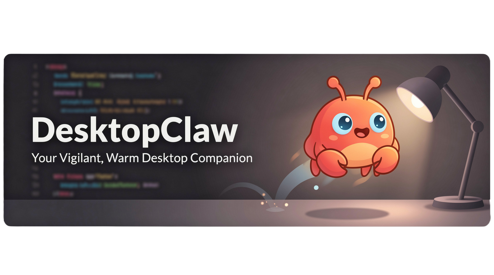
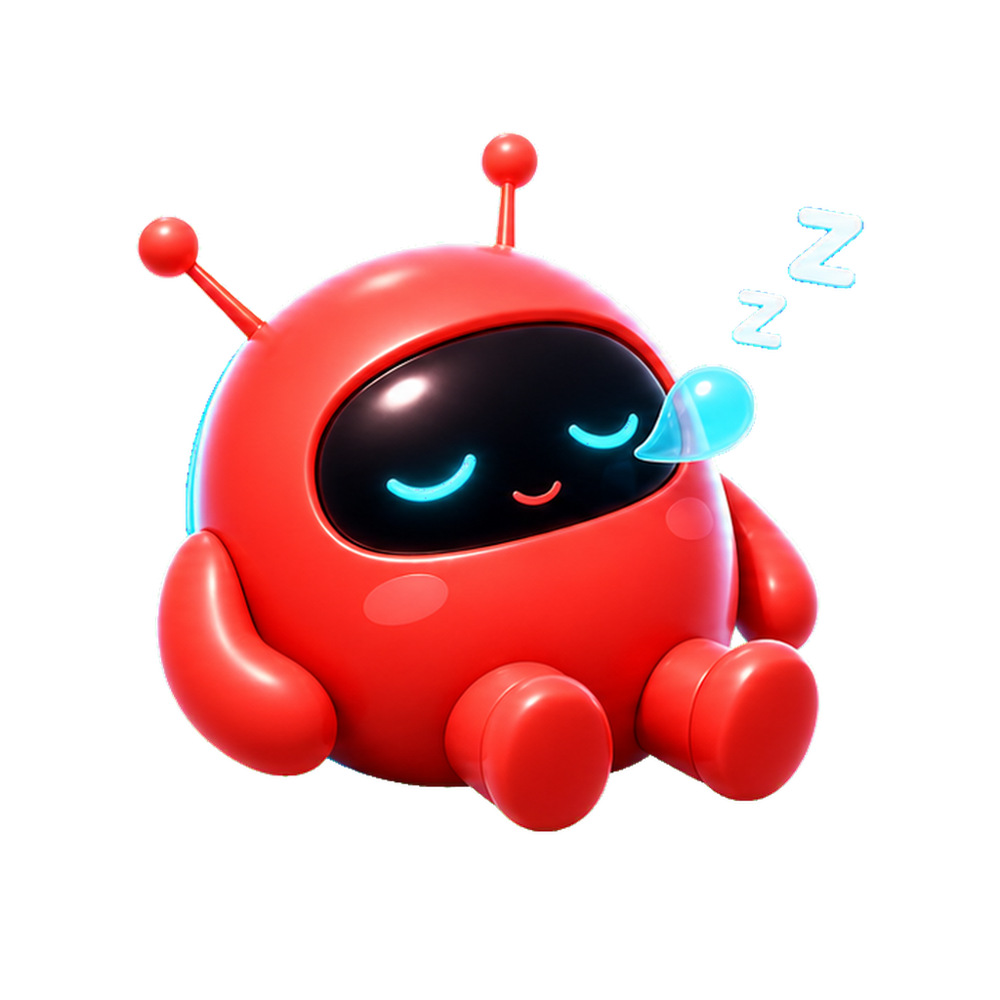
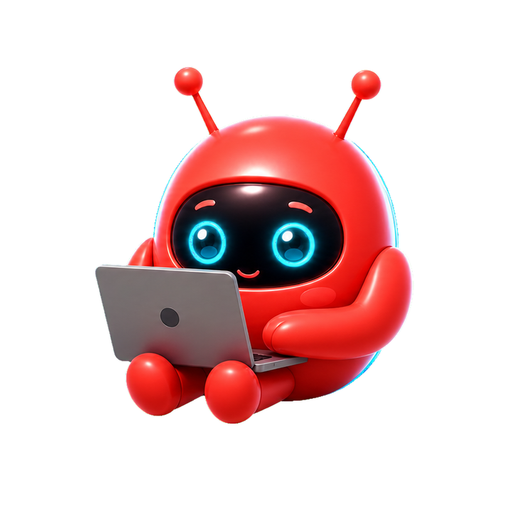
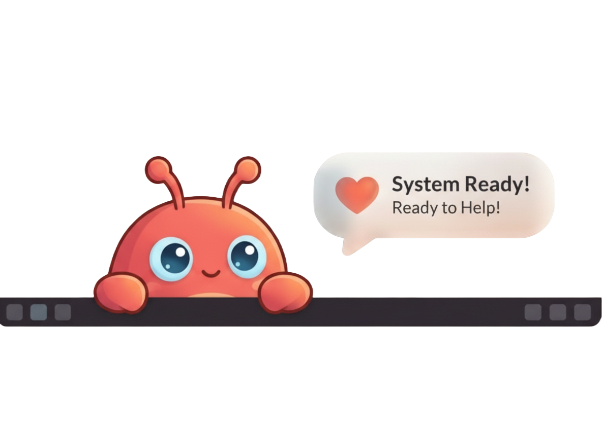

Voice + Presence
Talk naturally with local speech tools and a persistent desktop avatar that shows active progress while OpenClaw works.
OpenClaw Desktop Companion
DesktopClaw adds a visible, voice-enabled avatar to your desktop so OpenClaw feels responsive, warm, and always nearby.

Talk naturally with local speech tools and a persistent desktop avatar that shows active progress while OpenClaw works.
Stay focused with compact interactions: quick text input, push-to-talk, tray controls, and clean notifications.
A lightweight Electron companion tuned for desktop workflows, shortcuts, and always-on-top utility.


In Action
DesktopClaw keeps responses visible and approachable with thoughtful visual cues and a warm visual style.
